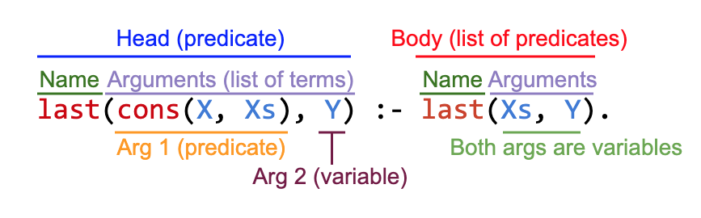

Write You a Prolog
I figured it’d be useful to have some examples of my language tooling libraries Sawmill and Pidgin in action. I thought it could be fun to use them to write a miniature Prolog interpreter!
You’ll find all the code for this series on GitHub.
Whistle-Stop Introduction to Prolog
Prolog is a logic programming language. Prolog code consists of a collection of rules. Each rule says “X is true if Y (and Z and…) is true”. A rule is a logical axiom, with a set of premises (on the right) and a conclusion you can draw from those premises (on the left).
As an example, you might say that a Person wants a certain Food if they’re hungry and they like that food. And — I don’t know about you — but I’ll eat something I really love even if I’m not hungry.
wants(Person, Food) :- hungry(Person), likes(Person, Food).
wants(Person, Food) :- loves(Person, Food).
% If someone loves a given food, then they also like it.
likes(Person, Food) :- loves(Person, Food).
% If we're going to have dinner, we'd better agree on what to eat.
dinner(Person1, Person2, Food) :- wants(Person1, Food), wants(Person2, Food).Variables in Prolog start with a capital letter. :- means “if” and , means “and”. You can give multiple alternative ways of satisfying the same predicate by just declaring it more than once. In other words, multiple declarations of the same predicate means “or”.
Next, we’ll prime Prolog’s database with a couple of facts about people and foods.
loves(benjamin, pizza).
loves(benjamin, asparagus).
likes(benjamin, soup).
loves(clio, salad).
likes(clio, pizza).
likes(clio, soup).
hungry(clio).Atoms in Prolog are somewhat like strings. They begin with a lower case letter.
Finally, we can issue a query to the interactive Prolog interpreter to find out whether we can have soup for dinner.
No soup for you. What can we eat for dinner? If we replace the atom soup — a specific food — with a variable Food (note the capital letter) — standing in for any food — Prolog will try to find a value for Food which satisfies the dinner predicate. (You can use as many variables as you like in a query. Prolog will try to find a value for all of them.)
Even though predicates don’t return anything per se — they either succeed or fail — you can use variables in this way to get information out of a predicate. Prolog’s constraint solving system is bi-directional — a predicate’s parameters can serve as both inputs and outputs.
Pattern Matching and Recursion
As well as putting conditions on the right-hand side of a rule, you can put patterns on the left. This is somewhat like pattern matching in functional languages — the right-hand side of a rule is only entered if its arguments match the pattern on the left.
Here’s a recursive predicate last(List, Item) which succeeds when Item is the last element of List.
last is another example of bi-directionality. You can use the second parameter as an input by passing in a value (in which case last will test whether Item is the last element of List), or you can use it as an output by passing in a variable (in which case Prolog will find the last element of List and set Item equal to it).
When running a predicate, Prolog tries each of its clauses from top to bottom to see if any of them succeed. So let’s review this code line by line.
The first rule has no right hand side, which means it succeeds as long as the predicate’s arguments match the pattern on the left. (Rules with no right-hand side are called facts.) The first argument on the left hand side is the pattern cons(X, nil). cons is a predicate whose two arguments are the head and tail of a list (the cons nomenclature comes from Lisp); in this instance its second argument is the atom nil (representing an empty list) and its first argument is left indeterminate — X can stand in for any element. The second argument of last is X. This is the same X as appeared in cons(X, nil). So, taken all together, this first line succeeds when its first argument is a single-element list and its second argument is that element.
The second line of this code is only entered when the first line fails — that is, when Xs is not nil. In the pattern on the left, we’ve replaced the concrete empty list nil with a variable Xs which can stand in for any list. The right-hand side of the rule recursively calls last. So this line says the last item of the list cons(X, Xs) is Y when the last item of Xs is Y.
Prolog’s bi-directional pattern matching system works by unification. Unification is a process of making two terms equal by filling in their variables. When matching a goal like last(cons(oranges, nil), Y) to a rule head like last(cons(X, nil), X), Prolog tries to find values to plug in for all the variables in scope so that the goal matches the rule. In this case, it’d determine that X and Y should both be oranges. I’ll talk about unification in much more detail in a later post.
It’s instructive to work through an example query: last(cons(apples, cons(oranges, nil)), oranges).
- Prolog first tries the top clause. It tries to unify the goal with
last(cons(X, nil), X). This fails because there’s no value forXwhich makes this match the goal. In other words, there’s one too many elements in the list for this clause to match. - Now it tries the second rule. Prolog tries to unify the goal with
last(cons(X, Xs), Y). This succeeds — the terms match whenX = apples,Xs = cons(oranges, nil), andY = oranges. So now Prolog creates a sub-goal for each clause on the right, of which there’s only one (last(Xs, Y)). SinceXs = cons(oranges, nil)andY = oranges, the goal islast(cons(oranges, nil), oranges). So now the code has to recursively calllast. - With this new goal we try the first clause again. Prolog tries to unify
last(cons(oranges, nil), oranges)withlast(cons(X, nil), X). This succeeds whenX = oranges. Since there are no conditions on the right hand side (this clause is the base case of the recursive function), we’re done! The query succeeded;orangesis indeed the last element of the list.
Representing Prolog Syntax
Hopefully blasting through Prolog’s core in only a few paragraphs was enough to get you excited about implementing it! The first step in interpreting a programming lanugage is to come up with a way to represent programs in that language. That means writing down some types representing the language’s abstract syntax tree. The middle part of the diagram I drew for my post announcing Sawmill:

As the name suggests, the exercise is to come up with an abstract representation of Prolog’s syntax. Think beyond the specifics of how the language is presented as text (such as where parentheses go and so on); we want to talk about the high-level grammatical constructs and how they relate to one another. This mode of thinking is akin to thinking about English at the level of sentence structure — subordinate clauses and so on — rather than spelling and punctuation.
I said a Prolog program was a collection of rules, so let’s start there.
What constitutes a rule? Looking at our example from earlier,
you can see that a rule has two main parts, separated by the :- symbol. On the left is the conclusion of the logical statement, in the form of a pattern which the rule can match. On the right are the premises of the logical statement, in the form of a comma-separated list of calls to other predicates. We’ll call these the Head and the Body of the rule. (A fact is just a rule with no predicates in the body.)
(I’m omitting constructors for brevity.) What should the types of these properties be? A rule’s head is always a name, followed by a comma-separated list of expressions inside parentheses. We’ll call this a Predicate. A rule’s body is also list of predicates.
class Rule
{
public Predicate Head { get; }
public ImmutableArray<Predicate> Body { get; }
}
class Predicate
{
public string Name { get; }
public ImmutableArray<?> Args { get; }
}Now to fill in the type of Args. Looking at the example last(cons(X, nil), X), each argument to a predicate can be one of:
- Another predicate applied to some arguments (
consin this example). - A variable (
X). - An atom (
nil).
We’ll refer to all three of these syntactic forms as terms. We’ll use subtyping to represent the fact that each argument could be any one of the three. Predicate, Variable and Atom are all subclasses of the Term base class; a Predicate’s arguments are a collection of Terms (but you don’t know statically what kind of Term to expect).
abstract class Term {}
class Predicate : Term
{
public string Name { get; }
public ImmutableArray<Term> Args { get; }
}
class Variable : Term
{
public string Name { get; }
}
class Atom : Term
{
public string Value { get; }
}That’s our whole abstract syntax! Here’s how our last(cons(X, Xs), Y) :- last(Xs, Y) example would be represented:
new Rule(
head: new Predicate(
name: "last",
args: new[]
{
new Predicate("cons", new[] { new Variable("X"), new Variable("Xs") }),
new Variable("Y")
}
),
body: new[]
{
new Predicate("last", new[] { new Variable("Xs"), new Variable("Y") })
}
)
Prolog’s rules engine is based entirely on manipulating terms, so these three classes will turn out to be quite important in our little interpreter.
Implementing IRewritable
Term is an immutable type with a recursive tree-shaped structure — a predicate’s arguments can be any Term, including more predicates. My generic programming library Sawmill is filled with tools for working with immutable trees! As a Sawmill user, you implement its core IRewritable interface on your tree structure, and Sawmill takes care of much of the boilerplate of traversing the tree for you. (See my earlier post for an introduction to Sawmill.)
IRewritable is all about addressing the immediate children of the current node in a tree. It has three methods, CountChildren, GetChildren, and SetChildren, which we have to implement for each subclass of our Term tree. Variables and atoms don’t have child terms — only predicates.
abstract class Term : IRewritable<Term>
{
public abstract int CountChildren();
public abstract void GetChildren(Span<Term> childrenReceiver);
public abstract Term SetChildren(ReadOnlySpan<Term> newChildren);
}
class Predicate : Term
{
// ...
public override int CountChildren() => Args.Length;
public override void GetChildren(Span<Term> childrenReceiver)
{
Args.CopyTo(childrenReceiver);
}
public override Term SetChildren(ReadOnlySpan<Term> newChildren)
=> new Predicate(Name, newChildren.ToImmutableArray());
}
class Variable : Term
{
// ...
public override int CountChildren() => 0;
public override void GetChildren(Span<Term> childrenReceiver) { }
public override Term SetChildren(ReadOnlySpan<Term> newChildren) => this;
}
class Atom : Term
{
// ...
public override int CountChildren() => 0;
public override void GetChildren(Span<Term> childrenReceiver) { }
public override Term SetChildren(ReadOnlySpan<Term> newChildren) => this;
}We can now use Sawmill’s stock traversals like SelfAndDescendants and Rewrite to work with terms. For example, here’s a method which finds all of the variables mentioned in a term.
public static IEnumerable<string> Variables(this Term term)
=> term
.SelfAndDescendants()
.OfType<Variable>()
.Select(v => v.Name)
.Distinct();Here’s a method which writes out a term as a string (and a corresponding one for Rules).
abstract class Term
{
// ...
public override string ToString()
=> this.Fold<Term, string>((childStrings, x) =>
{
switch (x)
{
case Predicate p:
return p.Name + "(" + string.Join(", ", childStrings.ToArray()) + ")";
case Variable v:
return v.Name;
case Atom a:
return a.Value;
default:
throw new Exception("unknown term");
}
});
}
class Rule
{
// ...
public override string ToString()
=> Head + (
Body.Length == 0
? ""
: " :- " + string.Join(", ", Body.Select(x => x.ToString()))
) + ".";
}As an exercise, you could try extending this abstract syntax (and ToString) to support numbers.
And a quick test of our last example:
static void Main(string[] args)
{
var rule = new Rule(
head: new Predicate(
name: "last",
args: new[]
{
new Predicate("cons", new[] { new Variable("X"), new Variable("Xs") }),
new Variable("Y")
}
),
body: new[]
{
new Predicate("last", new[] { new Variable("Xs"), new Variable("Y") })
}
);
Console.WriteLine(rule.ToString());
// prints out last(cons(X, Xs), Y) :- last(Xs, Y).
}You can find these AST classes in the example repo, in the file Syntax.cs. Next time we’ll write a parser!